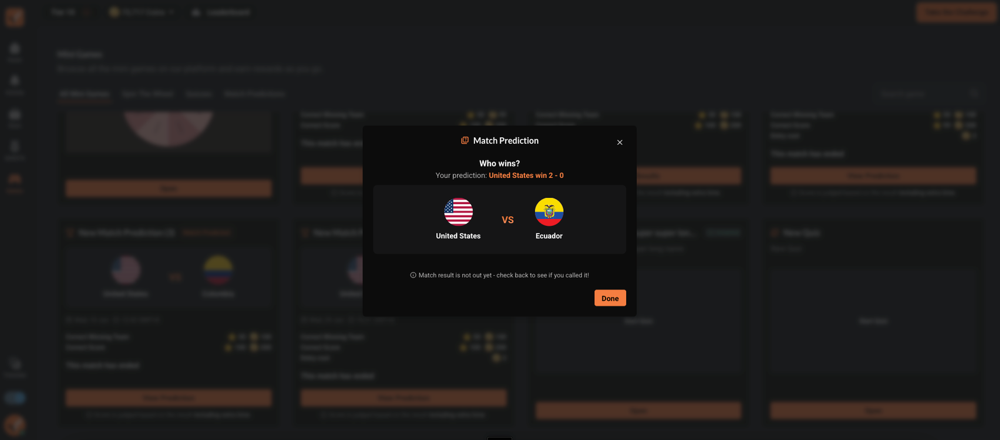
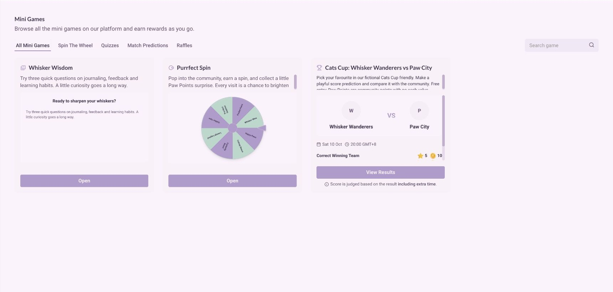
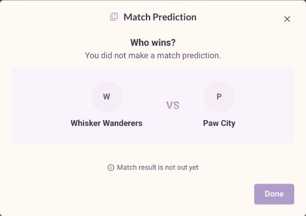

An engagement family / different participation models
Small games.
Different product rules.
Spin the Wheel, Raffles and Match Prediction share a place in the product. Their participation models are different: earned spins, personal tickets and a time-bound prediction.

Product and widget systems design; specific contributions and collaborator credit are detailed on each feature page.
Preserved product screens + specifications + CatTrader widget
Discover → understand eligibility → participate → review outcome
Three participation models
The mechanic decides the journey.
Explore the product logic
Reuse the shell. Keep the rule specific.
Choose a game to compare its entry condition, time model and recorded outcome. These are explanatory examples, not a replacement game selector.
Participation / earned spin
Earn the action before playing.
- Entry
- A spin from a qualifying mission
- Time
- Spin availability and optional expiry
- After
- A result recorded in spin history
Local illustration · synthetic examples · no account, reward or configuration changes.
Portable product / CatTrader
The feature, inside its own delivery surface.
The saved The Cat Playroom widget is the source for this embed. The saved widget includes the wheel and Match Prediction. Raffles has its own design evidence and is not part of this saved selection.

Feature flow
One discovery surface, several state machines.
- 01
Discover available games
The game family lets members find an activity and see its current availability.
- 02
Read the participation rule
Missions, tickets and prediction windows require different explanations.
- 03
Use the game-specific flow
Each mechanic retains its own entry, feedback and result states.
- 04
Review the record
Histories, tickets and settled predictions keep the outcome visible.
Preserved product evidence
The family holds different interaction shapes.


The working feature / staging evidence
The shared entry point, then a distinct experience.
Fresh staging screens show the family in use. The wheel opens into its own dashboard; Match Prediction keeps its outcome in a dedicated result view.



Evidence and limits
Read the artifacts at their actual strength.
Design intent and screen hierarchy.
The visible state at capture time.
Deterministic explanation of documented rules.
Source gaps and integration limits
The CatTrader widget has two selected games and excludes Raffles. The historical product captures do not establish the latest released implementation.
Feature walkthrough · updated 12 October 2026. Screens and source records are curated for explanation; no unverified adoption or business-impact claim is made.